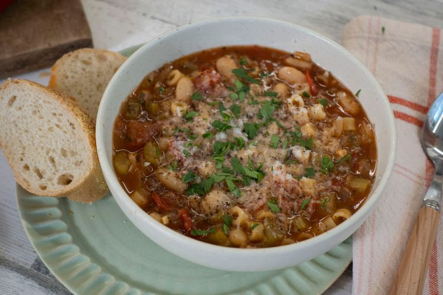

Pasta

How to Make Pasta
Making pasta can be time-consuming, but the results are well worth the wait. You'll find a detailed ingredient list and step-by-step instructions in the recipe below, but let's go over the basics:
Ingredients
- Oil: This pasta fagioli recipe starts with cooking an onion in olive oil.
- Vegetables: You'll need an onion, celery, and a can of cannellini beans.
- Seasonings and herbs: The flavorful soup is seasoned with fresh garlic, parsley, Italian seasoning, crushed red pepper flakes, and salt.
- Broth: Use store-bought or homemade chicken broth.
- Tomatoes: You'll need fresh chopped tomatoes and a can of tomato sauce.
- Pasta: Make this traditional pasta fagioli with ditalini noodles (or any noodle you like).
Steps
- Gather the ingredients.
- Heat olive oil in a large saucepan over medium heat. Add onion, celery, garlic, parsley, Italian seasoning, pepper flakes, and salt; cook and stir until onion is translucent, about 5 minutes.
- Stir in chicken broth, tomato sauce, and tomatoes. Reduce the heat to low and simmer for 15 to 20 minutes.
-
- Add pasta and cook until tender, about 10 minutes.
- Stir in undrained beans and cook until heated through, 3 to 4 minutes.
- Serve hot and enjoy!